Is there a difference in the gain or loss of Bd over 7 days between the filter sizes looking at the TOTAL BD
Answer: There is a significant difference in the change in the total quantity of Bd from Day 1 to Day 7 across the filter types (t = 4.7879, df = 14, p-value = 0.000289)
PI data wrangling
Code
# remove controlspartI <- fs_pw_bd %>%filter(site !="sterile MQ")# keep control for labeling plotpartI_controls <- fs_pw_bd %>%filter(site =="sterile MQ")# data type cleaningpartI$bd_location <-factor(partI$bd_location, levels =c("floating", "adherent"))partI$filter <-factor(partI$filter,levels =c("40um_filter", "0.22um_filter"))partI$day <-factor(partI$day, levels =c("1", "7"),labels =c("Day_1", "Day_7"))partI$site <-factor(partI$site,levels =c("BARN", "CABIN", "NORTH", "GRAMPS", "WEST", "GDPND004", "GDPND005", "GDPND006", "GDPND008", "GDPND009", "PRPND002", "PRPND003", "PRPND004", "PRPND009", "PRPND010", "sterile MQ"))partI_total_diff <- partI %>%# combine floating and adherent for total_Bdpivot_wider(names_from = bd_location, values_from = bd_qty) %>%mutate(combined_bd = adherent + floating) %>%subset(select =-c(adherent,floating)) %>%# calculate the difference in raw amount of Bdpivot_wider(names_from = day, values_from = combined_bd) %>%mutate(diff = Day_1 - Day_7) %>%# calculate the rate loss by taking the log of each before subtractingmutate(rate_loss =log(Day_1) -log(Day_7))
PI Data visualization
Code
# Colors: these are from Paul Tol's colorblind friendly palettewith_microbes <-"#999933"no_microbes <-"#88ccee"my_palette <-c("40um_filter"="#999933","0.22um_filter"="#88ccee")
partI %>%# combine floating and adherent for total_Bdpivot_wider(names_from = bd_location, values_from = bd_qty) %>%mutate(combined_bd = adherent + floating) %>%ggplot(aes(y= combined_bd, x = filter, fill = filter)) +geom_boxplot() +geom_jitter(width =0.2, alpha =0.3) +scale_y_log10() +facet_wrap(~day, labeller =labeller(day =c("Day_1"="Day 1","Day_7"="Day 7")))+scale_fill_manual(values = my_palette) +theme_classic() +theme(legend.position ="none",strip.text =element_text(face="bold"),axis.title =element_text(face ="bold")) +scale_x_discrete (labels=c("40um_filter"="With Microbes", "0.22um_filter"="No Microbes")) +xlab("Presence of Microbes in Pond Water") +ylab("Bd Quantity \n (zoospore equivalents)")
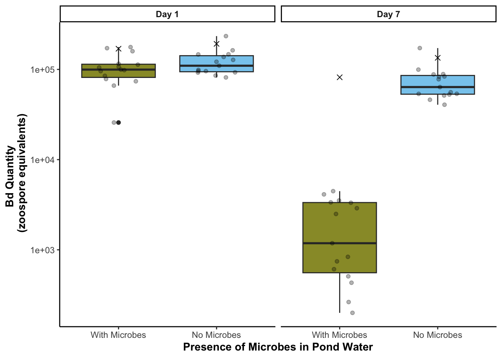
Code
# add x's for controls
PI Stats and assumption testing
Question:
Does the difference in Bd from day 1 to day 7 differ between the two filter types?
The samples are essentially paired by site, so a paired t-test is most appropriate
\(H0:μ_{difference in Bd}=0\)
Assumptions:
Assumes that the observations from each group represent a random sample from the population. Assumes that the difference of the two observations follow a normal distribution.
Part I Q1: Paired t-test on the difference in all of the Bd from day 1 to day 7 between the two filters
There is a significant difference in the change in the total quantity of Bd from Day 1 to Day 7 across the filter types (t = 4.7879, df = 14, p-value = 0.000289)
Code
# first, split into 2 data frames one for 40 and one for .22partI_total_diff_40um <- partI_total_diff %>%filter(filter =="40um_filter")partI_total_diff.22um <- partI_total_diff%>%filter(filter =="0.22um_filter")# check normality of the differences across groups: it's normal untransformed in both!partI_total_diff_40um %>%ggqqplot("diff", title ="Untransformed Bd in both floating and floating diff between day 1 and 7 qqPlot") # good enough
Shapiro-Wilk normality test
data: partI_total_diff.22um$diff
W = 0.96225, p-value = 0.7314
Code
hist(partI_total_diff.22um$diff) # good enough
Code
# visualize the comparison I am makingpartI_total_diff %>%ggplot(aes(y= diff, x = filter)) +geom_boxplot() +geom_jitter() +ggtitle("Visualizing comparison for paired t-test on the differences")
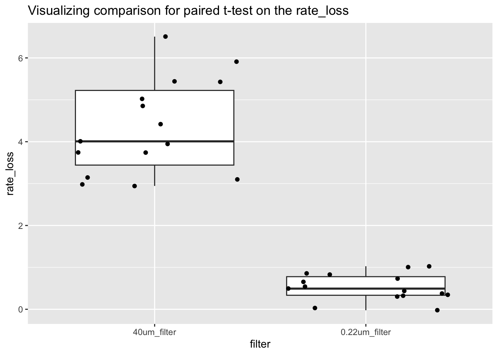
Stats:
Code
# Step 3: run the paired t-test on the differencet.test(partI_total_diff_40um$diff, partI_total_diff.22um$diff, paired =TRUE)
Paired t-test
data: partI_total_diff_40um$diff and partI_total_diff.22um$diff
t = 4.7879, df = 14, p-value = 0.000289
alternative hypothesis: true mean difference is not equal to 0
95 percent confidence interval:
30282.21 79427.13
sample estimates:
mean difference
54854.67
Pond water with microbes has a significantly greater loss of Bd between day 1 to day 7 than pond water without microbes (t = 4.8, df = 14, p = 0.000289). The t-value is positive, which shows that the first item entered (with microbes) has a larger loss of Bd than the second item entered (no microbes.) Df of 14 is expected, because it’s 15 sites.
Part II: Effect of the aquatic environmental biofilm on Bd growth - “9 sites”
Shapiro-Wilk normality test
data: part_two_bf_only$log_qty
W = 0.94014, p-value = 0.1228
Code
hist(part_two_bf_only$log_qty) # good enough?
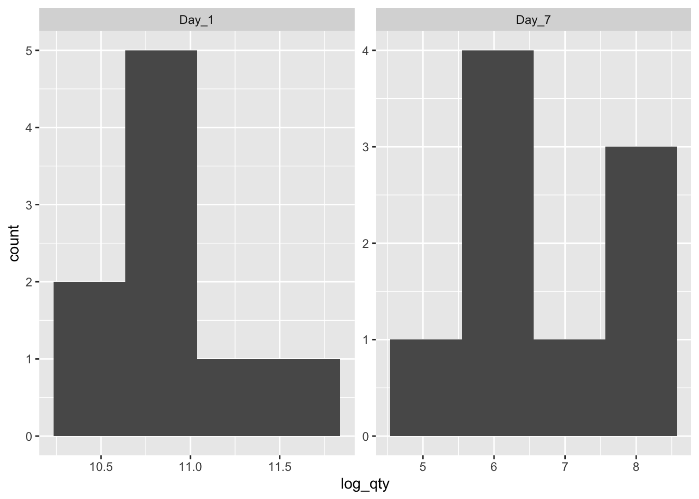
Code
mod<-aov(log_qty ~ day, data = part_two_bf_only) # couldn't use "plot" on lme so this was next best thing?plot(mod) # good enough resids?
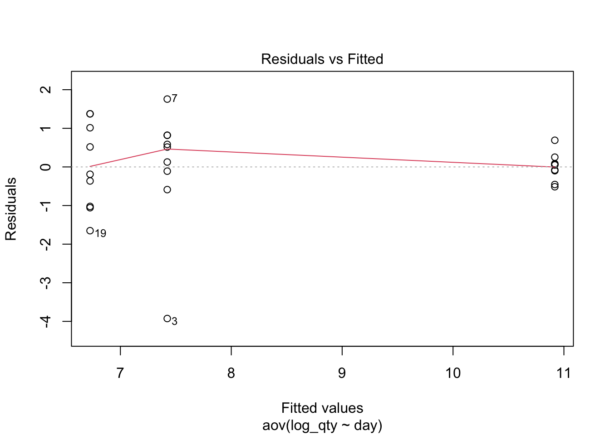
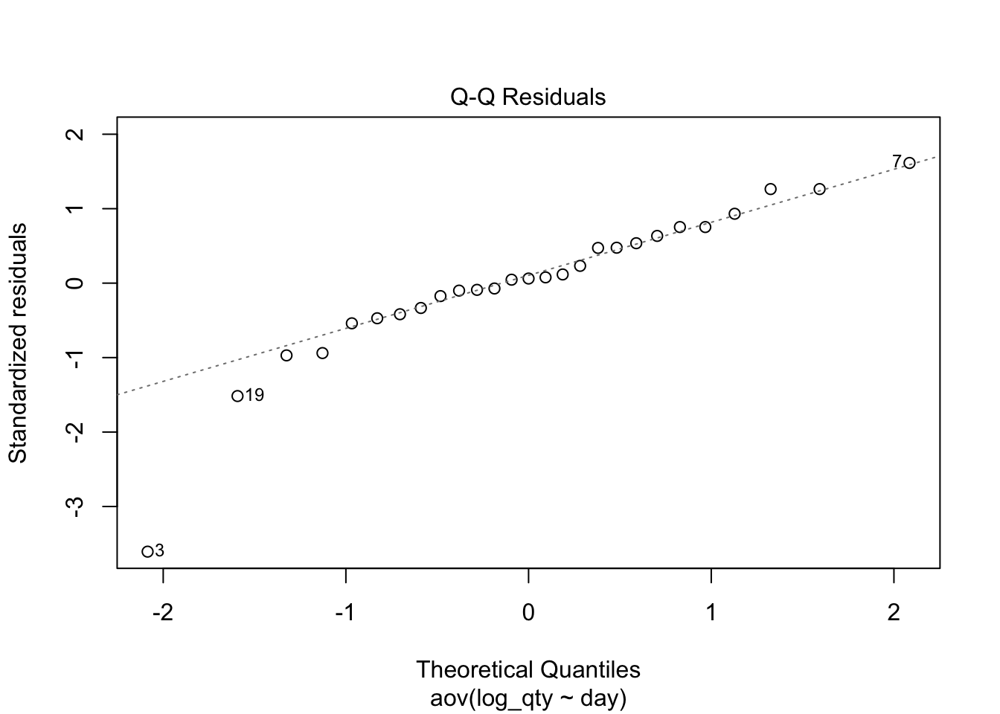
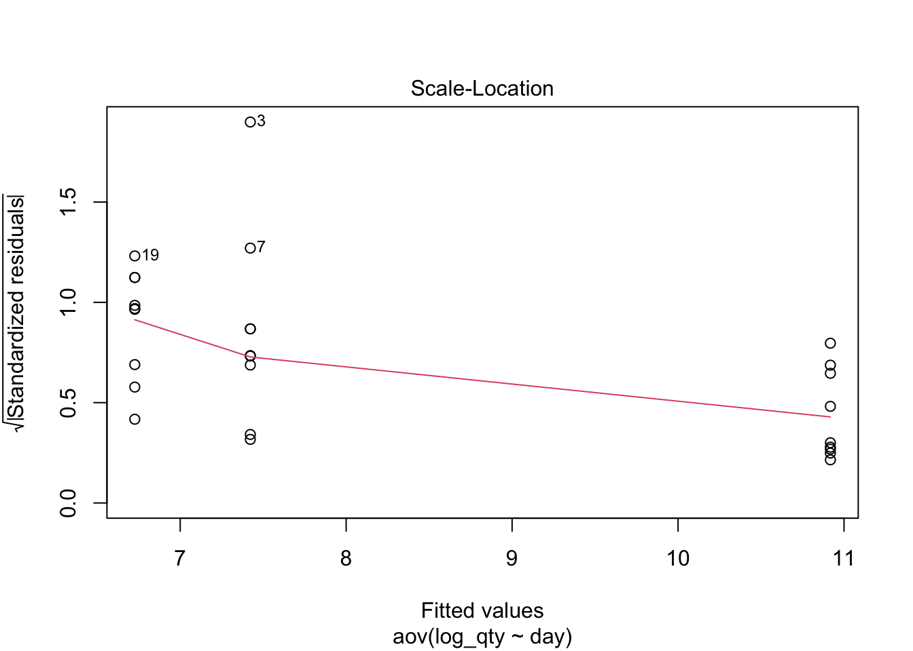
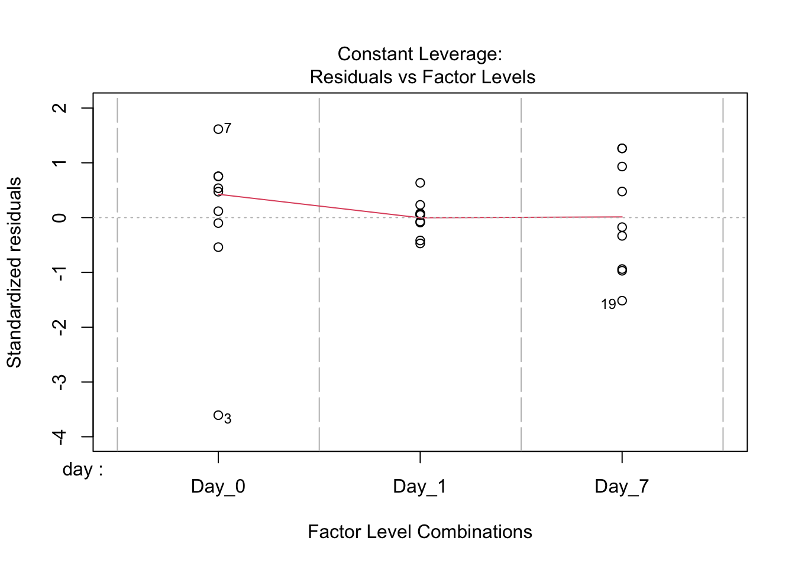
Code
# Model for randomized block designlme_mod <-lme(log_qty ~ day, random =~1|factor(site), data = part_two_bf_only)summary(lme_mod) # summary of the output
Linear mixed-effects model fit by REML
Data: part_two_bf_only
AIC BIC logLik
91.6078 97.49807 -40.8039
Random effects:
Formula: ~1 | factor(site)
(Intercept) Residual
StdDev: 4.675947e-05 1.154766
Fixed effects: log_qty ~ day
Value Std.Error DF t-value p-value
(Intercept) 7.422629 0.3849219 16 19.283466 0.0000
dayDay_1 3.495259 0.5443618 16 6.420838 0.0000
dayDay_7 -0.696317 0.5443618 16 -1.279144 0.2191
Correlation:
(Intr) dyDy_1
dayDay_1 -0.707
dayDay_7 -0.707 0.500
Standardized Within-Group Residuals:
Min Q1 Med Q3 Max
-3.39992852 -0.35421365 0.05837138 0.55166474 1.52173935
Number of Observations: 27
Number of Groups: 9
Code
anova(lme_mod) # suse anova table to determine if the fixed effect of day is significant
$lsmeans
day lsmean SE df lower.CL upper.CL
Day_0 7.42 0.385 8 6.53 8.31
Day_1 10.92 0.385 8 10.03 11.81
Day_7 6.73 0.385 8 5.84 7.61
Degrees-of-freedom method: containment
Confidence level used: 0.95
$contrasts
contrast estimate SE df t.ratio p.value
Day_0 - Day_1 -3.495 0.544 16 -6.421 <.0001
Day_0 - Day_7 0.696 0.544 16 1.279 0.4266
Day_1 - Day_7 4.192 0.544 16 7.700 <.0001
Degrees-of-freedom method: containment
P value adjustment: tukey method for comparing a family of 3 estimates
Code
summary(glht(lme_mod, linfct=mcp(day="Tukey"))) # same output
Simultaneous Tests for General Linear Hypotheses
Multiple Comparisons of Means: Tukey Contrasts
Fit: lme.formula(fixed = log_qty ~ day, data = part_two_bf_only, random = ~1 |
factor(site))
Linear Hypotheses:
Estimate Std. Error z value Pr(>|z|)
Day_1 - Day_0 == 0 3.4953 0.5444 6.421 <1e-04 ***
Day_7 - Day_0 == 0 -0.6963 0.5444 -1.279 0.407
Day_7 - Day_1 == 0 -4.1916 0.5444 -7.700 <1e-04 ***
---
Signif. codes: 0 '***' 0.001 '**' 0.01 '*' 0.05 '.' 0.1 ' ' 1
(Adjusted p values reported -- single-step method)
If this is correct (and note I saw a similar trend when I did the pairwise ANOVA), then the result is that there is an overall effect of Day on the amount of Bd detected in the field biofilm (p > 0.001) and that Day_0 had less Bd in the biofilm than Day_1 (<.0001), Day_1 had less Bd in the biofilm than day_7 (<.0001), and there was no difference in the amount of the Bd on day 0 and day 7 (p=0.42). The test is a linear mixed effects model (the model is the log transformed Bd quantity ~ day, random = ~1|site) with a post hos pairwise comparison using the emmeans package. The initial model is recommended for a randomized block design, day is the fixed effect and site is the random effect. What I am not as sure about is the use of the emmeans package for the post-hoc comparisons so don’t take these to the bank yet. I saw this used here: https://www.researchgate.net/post/Post_hoc_test_in_linear_mixed_models_how_to_do.
Part III: Effect of microbes in pond water on the Bd-release from mono-strain Bd biofilm - “9 sites” and included biofilm
Scientific Q: Is mono-strain Bd biofilm resistant to microbes in pond water
Statistical question:
Is there a difference in the gain or loss of Bd total over 7 days between the filter sizes?
There is a significant difference in the change in the total quantity of Bd from Day 1 to Day 7 across the filter types (t = -6.45, df = 7, p-value = 0.0003)
PIII Data Wrangling
Code
part_three <- ns_ml_pw_bd %>%filter(filter !="control") %>%filter(site !="MQ")#---- Part IIIpart_three$site <-factor(part_three$site,levels =c("CABIN", "GRAMPS", "WEST", "GDPND005", "GDPND006", "GDPND009", "PRPND004", "PRPND009", "PRPND010", "control"))part_three$bd_location <-factor(part_three$bd_location, levels =c("supernatant", "adherent"))part_three$day <-factor(part_three$day, levels =c("Day_1", "Day_7")) part_three_total_diff <- part_three %>%# combine supernatant and adherent for total_Bdpivot_wider(names_from = bd_location, values_from = bd_qty) %>%mutate(combined_bd = adherent + supernatant) %>%subset(select =-c(adherent,supernatant)) %>%# calculate the difference in raw amount of Bdpivot_wider(names_from = day, values_from = combined_bd) %>%mutate(diff = Day_1 - Day_7) %>%# calculate the rate loss by taking the log of each before subtractingmutate(rate_loss =log(Day_1) -log(Day_7)) %>%filter(site !="MQ")# Step 2: create subsets for each treatmentpart_three_total_diff_40um <- part_three_total_diff%>%filter(filter =="40um_filter")part_three_total_diff.22um <- part_three_total_diff %>%filter(filter =="0.22um_filter")
part_three %>%# combine floating and adherent for total_Bdpivot_wider(names_from = bd_location, values_from = bd_qty) %>%mutate(combined_bd = adherent + supernatant) %>%ggplot(aes(y= combined_bd, x = filter, fill = filter)) +geom_boxplot() +geom_jitter(width =0.2, alpha =0.3) +scale_y_log10() +facet_wrap(~day) +scale_fill_manual(values = my_palette) +theme_classic() +theme(legend.position ="none",strip.text =element_text(face="bold"),axis.title =element_text(face ="bold")) +scale_x_discrete (labels=c("40um_filter"="With Microbes", "0.22um_filter"="No Microbes")) +xlab("Presence of Microbes in Pond Water") +ylab("Bd Quantity \n (zoospore equivalents)") +ggtitle("Monolayer Bd Biofilm Exposed to Pond Water")
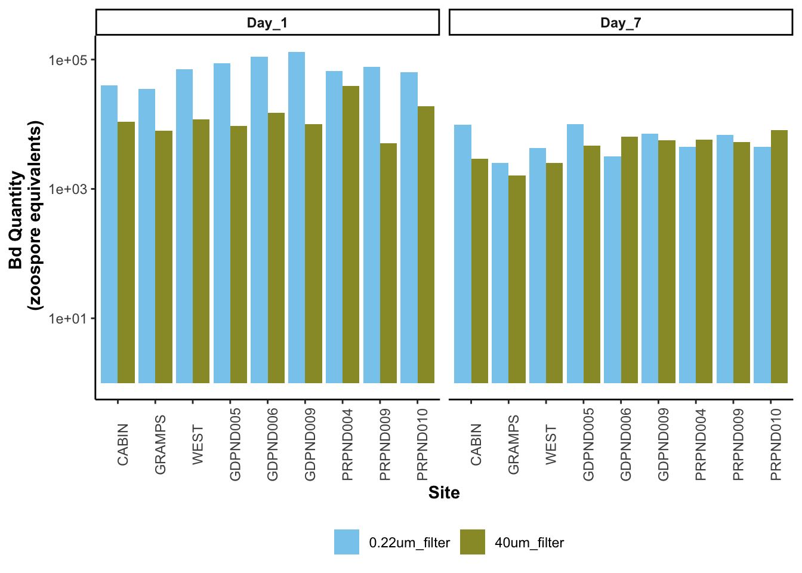
PIII Stats and assumption testing
Question:
Does the difference in Bd from day 1 to day 7 differ between the two filter types?
The samples are essentially paired by site, so a paired t-test is most appropriate
\(H0:μ_{difference in Bd}=0\)
Assumptions:
Assumes that the observations from each group represent a random sample from the population. Assumes that the difference of the two observations follow a normal distribution.
Code
# Assumptions testing# check normality of the differences across groupspart_three_total_diff_40um %>%ggqqplot("diff", title ="40 um") # not great
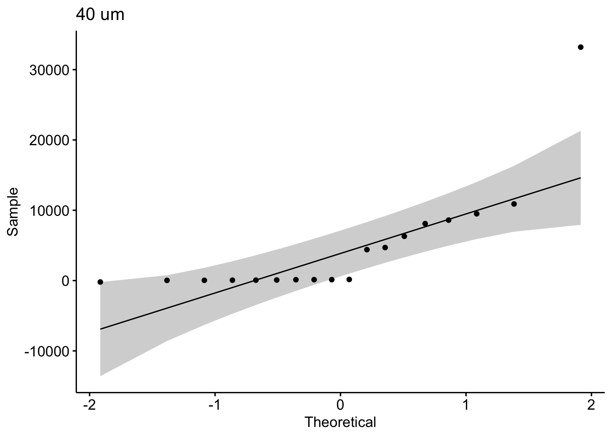
Code
shapiro.test(part_three_total_diff_40um$diff) # NOT normal
Shapiro-Wilk normality test
data: part_three_total_diff_40um$diff
W = 0.73146, p-value = 0.003302
Code
hist(part_three_total_diff_40um$diff) # nope
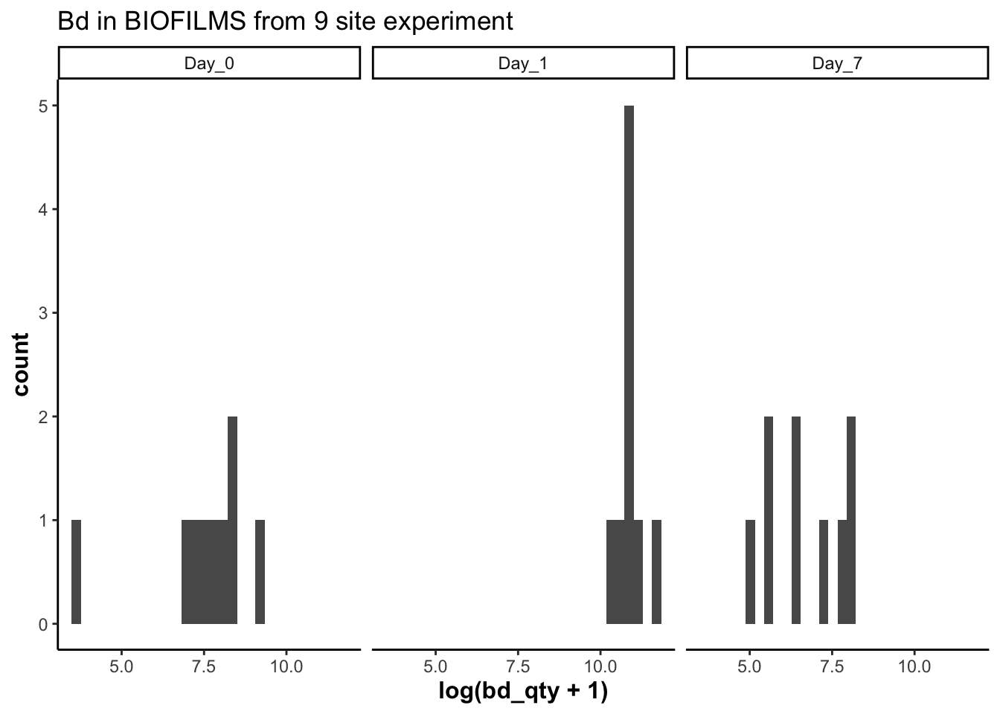
Code
# we gotta transform, but we have negative: west GAINED Bdpart_three_total_diff_40um <- part_three_total_diff_40um %>%mutate(log_diff =log(diff))
Warning: There was 1 warning in `mutate()`.
ℹ In argument: `log_diff = log(diff)`.
Caused by warning in `log()`:
! NaNs produced
Code
part_three_total_diff_40um %>%ggqqplot("log_diff", title ="40 um") # good enough
Shapiro-Wilk normality test
data: part_three_total_diff_40um$log_diff
W = 0.87459, p-value = 0.167
Code
hist(part_three_total_diff_40um$log_diff) # sure
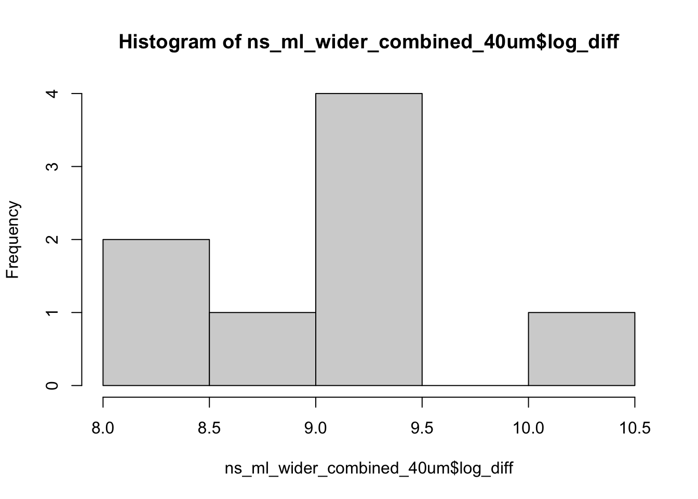
Code
# 0.22 micron# check normality of the differences across groupspart_three_total_diff.22um %>%ggqqplot("diff", title =".22 um") # not great
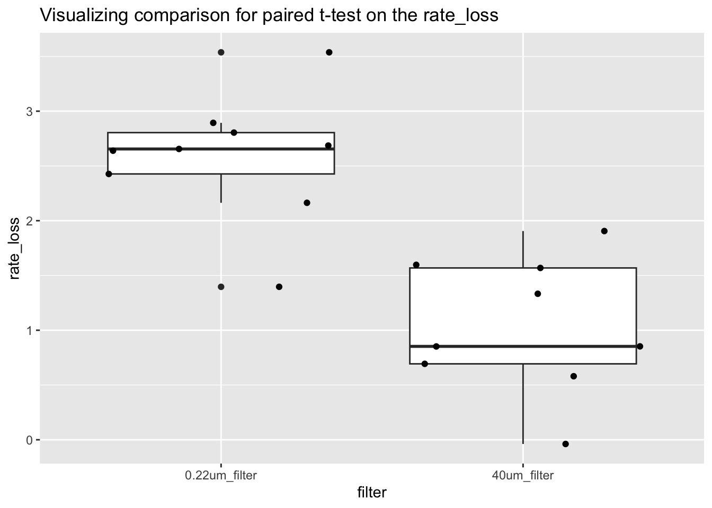
Code
shapiro.test(part_three_total_diff.22um $diff) # shapiro says its fine
Shapiro-Wilk normality test
data: part_three_total_diff.22um$diff
W = 0.93097, p-value = 0.4906
Code
hist(part_three_total_diff.22um $diff) # meh
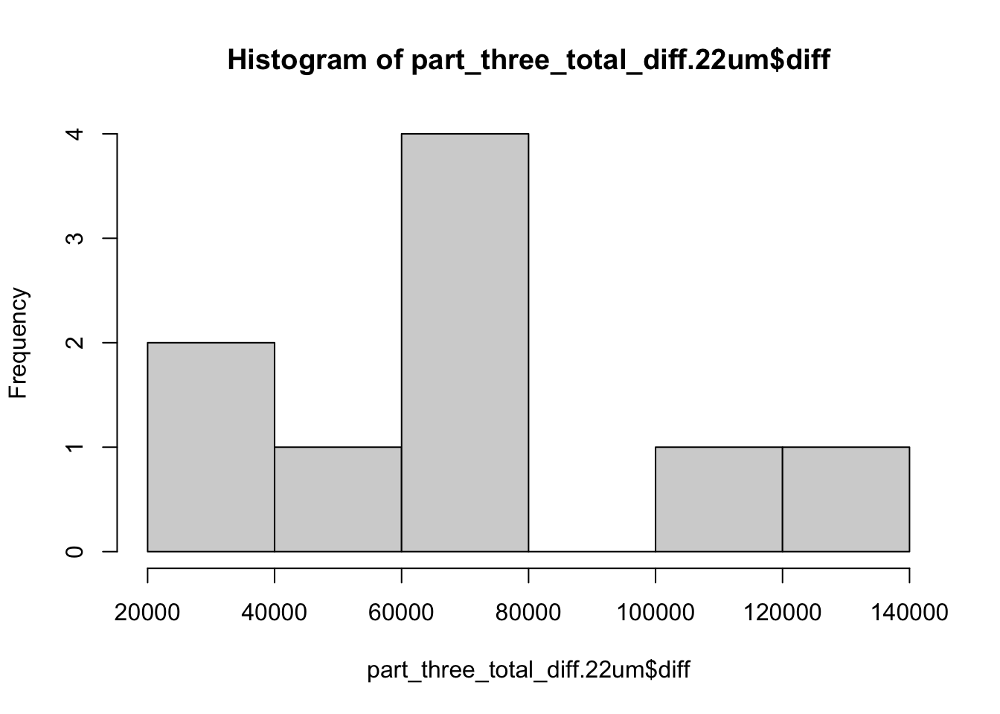
Code
# we gotta transform, but we have negative: west GAINED Bdpart_three_total_diff.22um <- part_three_total_diff.22um %>%mutate(log_diff =log(diff))part_three_total_diff.22um %>%ggqqplot("log_diff", title =".22 um") # better?
Shapiro-Wilk normality test
data: part_three_total_diff.22um$log_diff
W = 0.92397, p-value = 0.4262
Code
hist(part_three_total_diff.22um $log_diff) # sure
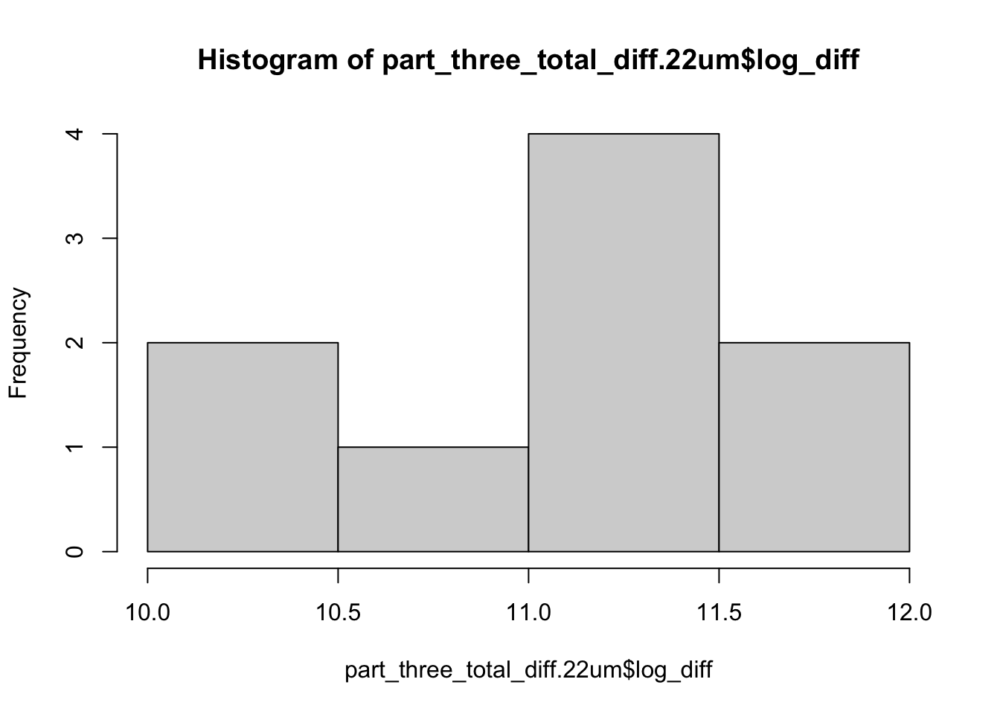
Code
# visualize the comparison I am makingpart_three_total_diff %>%ggplot(aes(y= diff, x = filter)) +geom_boxplot() +geom_jitter(width =0.1) +scale_y_log10()+ggtitle("Visualizing comparison for paired t-test on the differences")
Warning in self$trans$transform(x): NaNs produced
Warning: Transformation introduced infinite values in continuous y-axis
Warning in self$trans$transform(x): NaNs produced
Warning: Transformation introduced infinite values in continuous y-axis
# Step 3: run the paired t-test on the differencet.test(part_three_total_diff_40um$log_diff, part_three_total_diff.22um$log_diff, paired =TRUE)
Paired t-test
data: part_three_total_diff_40um$log_diff and part_three_total_diff.22um$log_diff
t = -6.4535, df = 7, p-value = 0.0003491
alternative hypothesis: true mean difference is not equal to 0
95 percent confidence interval:
-2.701740 -1.252776
sample estimates:
mean difference
-1.977258
When monolayer Bd biofilm is exposed to pond water without microbes has a significantly greater loss of Bd between day 1 to day 7 than pond water with microbes (t = -6.5, df = 7, p = 0.0003491). The t-value is positive, which shows that the first item entered (with microbes) has a smaller loss of Bd than the second item entered (no microbes).
Note: df = 7? It should be 8, look into any NaN’s that may have been produced during log transformation
Part IV Comparing across all treatments
1: susbet out only nine sites
2: subset out by treatment
2: calculate the percent Bd lost from day 1 to day 7 per site AND the rate of loss
3: add column for treatment
4: transform as needed
5: ANOVA and Tukey
Code
# data wrangling for comparisons across experimentspw_no_microbes <- partI_total_diff %>%filter(site!="NORTH"& site!="BARN"& site!="PRPND002"& site!="PRPND003"& site!="GDPND004"& site!="GDPND008") %>%filter(filter =="0.22um_filter") %>%mutate(treatment ="PW 0.22um")pw_WITH_microbes <- partI_total_diff %>%filter(site!="NORTH"& site!="BARN"& site!="PRPND002"& site!="PRPND003"& site!="GDPND004"& site!="GDPND008") %>%filter(filter !="0.22um_filter") %>%mutate(treatment ="PW 40um")fieldbf_no_microbes <- part_two_bf_only %>%subset(select =-c(bd_location, log_qty)) %>%filter(day !="Day_0") %>%# calculate the difference in raw amount of Bdpivot_wider(names_from = day, values_from = bd_qty) %>%mutate(diff = Day_1 - Day_7) %>%# calculate the rate loss by taking the log of each before subtractingmutate(rate_loss =log(Day_1) -log(Day_7)) %>%mutate(treatment ="Field bf 0.22") %>%mutate(filter ="0.22um_filter")monolayer_WITH_microbes <- part_three_total_diff %>%filter(filter !="0.22um_filter") %>%mutate(treatment ="Monolayer 40um")monolayer_NO_microbes <- part_three_total_diff %>%filter(filter =="0.22um_filter") %>%mutate(treatment ="Monolayer 0.22um")all_parts<-bind_rows(pw_WITH_microbes, pw_no_microbes, fieldbf_no_microbes, monolayer_WITH_microbes, monolayer_NO_microbes) %>%mutate(percent_loss = (diff/Day_1) *100) # set PW 40 um as the intercept, comparing back to that oneall_parts$treatment <-factor(all_parts$treatment,levels =c("PW 40um", "PW 0.22um", "Field bf 0.22", "Monolayer 40um", "Monolayer 0.22um"))
Boxplot of all parts
Code
all_parts %>%ggplot(aes(y= percent_loss, x = treatment)) +geom_boxplot() +geom_jitter(alpha =0.5, width =0.1) +theme_classic() +theme(strip.text =element_text(face="bold"),axis.title =element_text(face ="bold")) +scale_x_discrete (labels=c("40um_filter"="With Microbes", "0.22um_filter"="No Microbes")) +xlab("Treatment") +ylab("Percent Reduction of Bd over 7 Days")
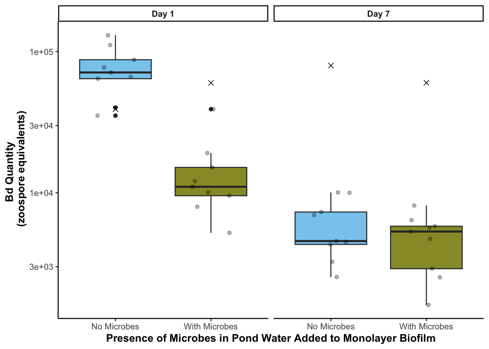
Assumptions testing and stats
Code
# Is my data normal?mod <-aov(percent_loss~treatment, data=all_parts)plot(mod) # nope! gotta transform or try rate
Warning: There was 1 warning in `mutate()`.
ℹ In argument: `transformed_percent = asin(sqrt(prop_loss))`.
Caused by warning in `sqrt()`:
! NaNs produced
cld(post_hoc) # gives diff pairwise diff than the above
PW 40um PW 0.22um Field bf 0.22 Monolayer 40um
"a" "b" "a" "b"
Monolayer 0.22um
"c"
I am thinking myself in circles with the directional of the rate of loss… log(day1) - log(day7) gives a positive value and log(day7) - log(day1) gives a negative value… regardless…a bigger absolute value means a greater death rate, so we are seeing the same general trends BUT the post-hoc is a bit different inn between them. Note the “rate” one fits assumptions better.